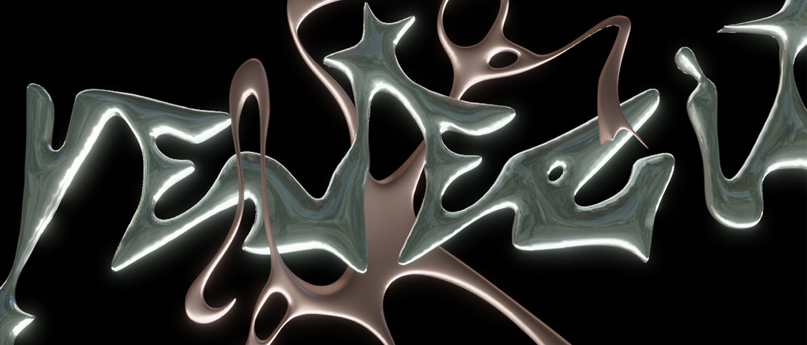
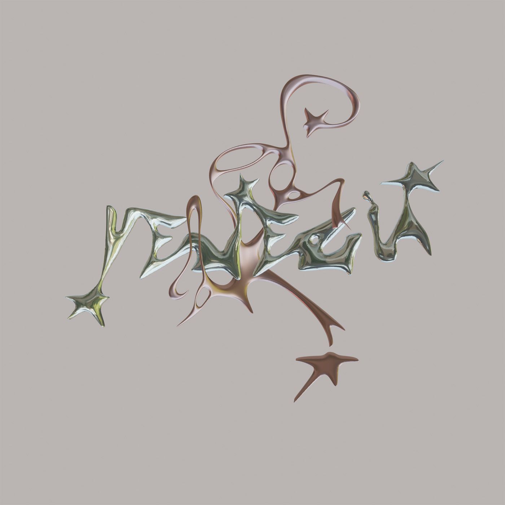
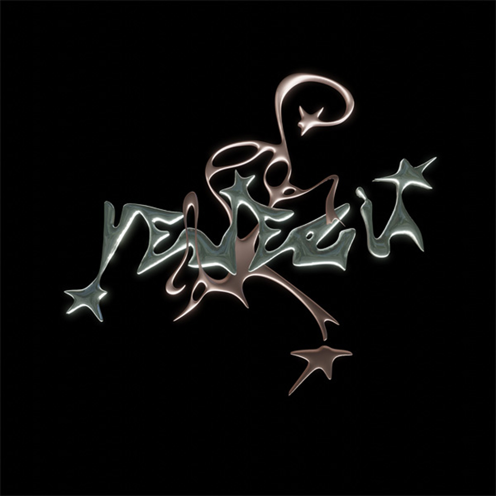

Modelado y Esculpido 3D
Tipografía Líquida
Venezia

Este trabajo aborda el diseño de una tipografía 3D desde una lógica orgánica y experimental, con una estética cyber inspirada en la fluidez y reflectividad del metal líquido. Partiendo de una forma vectorial, el proceso se expande hacia el esculpido, la exploración de luces y texturas, y el render final de la escena.
Año: 2025
Herramientas: Blender y Adobe Illustrator
Categoría: Modelado y Esculpido Tipografía 3D

